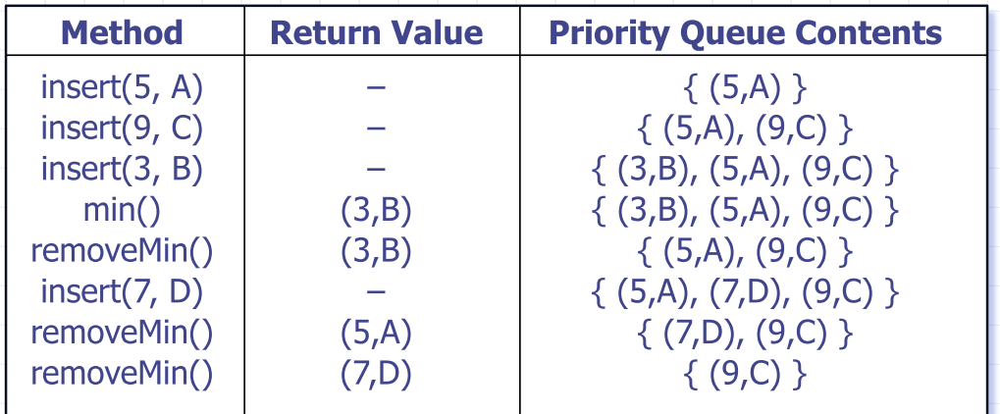
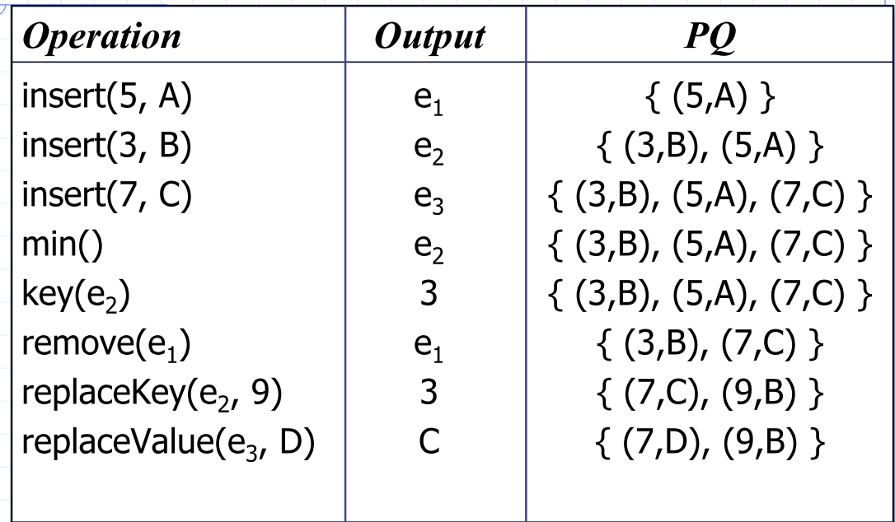
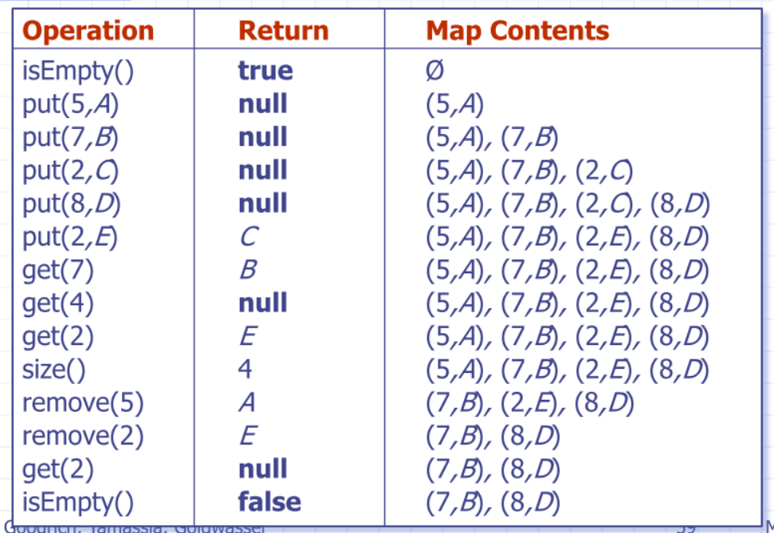
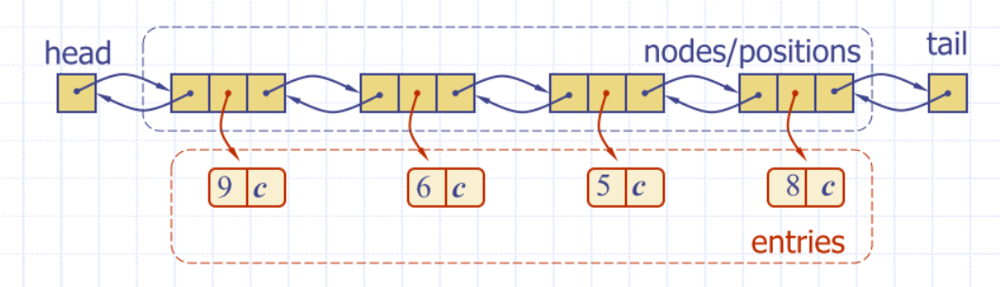

Lecture 5
Priority queues
ADT
-
Each entry is a pair (key, value)
-
Main methods
insert(k,v)removeMin()
-
Additional methods
min()size(),isEmpty()
-
Queue
- FIFO
-
Priority Queue
- Elements are stored as Entries
- Entry with the highest priority is stored first

- An entry in a key is a key-value pair
- Can override the less than operator to compare entries
class entry:
def __init__(self, k, v):
self._key = k
self._value = v
def __lt__(self, other):
return self._key < other._key
def get_key(self):
return self._key
- Imposing a total order on your keys means that trees are representing a kind of ordered map
- however, true maps require key-uniqueness
Comparator ADT
# 2D coordinate class stub
class point:
def __init__(self, x, y):
self._x = x
self._y = y
def get_x(self):
return self._x
def get_y(self):
return self._y
# Less than ‘<‘ operator
def __lt__(self, other):
xa = self.get_x()
ya = self.get_y()
xb = other.get_x()
yb = other.get_y()
if xa == xb:
return ya < yb
return xa < xb
Sequence-based priority queue
-
Implementation with an unsorted list
- Insertion takes time
removemin()andmin()take time
-
Implementation with a sorted list
Insert(p)take timeRemoveMin()andmin()take time
Heaps
- Binary tree storing keys at its nodes and satisfying the following properties:
- Heap order: the key of the node is the key of its parent
- Has to be a complete binary tree
- at height , the internal nodes are to the left of the external nodes
- Last node of a heap is the rightmost nodes of maximum depth
Heap properties
- A heap can implement a priority queue
- Store a (key, element) entry at each node
- Keep track of the position of the last node
Insertion into a heap
- Insert in the PQ ADT corresponds to inserting key into the heap
- Insertion algorithm:
- Find the insertion node
Upheap
- After inserting a new key , the heap-order property (child nodes must have keys >= their parents) may be violated
- Upheap swaps k along an upward path from the insertion node, until k reaches the root or a node whose parent has a key less than or equal to k
- Since a heap has height upheap runs in time
- worst case you swap all the way up the tree, which is length
| addition of key 3 | addition of key 4 | final result |
|---|---|---|
 |
 |
 |
removal from a heap
removeMin in the PQ ADT corresponds to removing the root key from the heap
- Removal algorithm
- Replace the root key with the key of the last node w
- Remove w
- Restore the heap-order property (downheap)
Downheap
- Downheap replaces root key with key
kof the last node and swaps keykalong a downward path from the root- swaps with the smaller of the two keys
- Because height of tree is , downheap runs in
removeMin()corresponds to removing the root (smallest key) from the heap- Algorithm:
- Swap the last position with the root, and retrieve the node
removeMin |
intemediate step | result |
|---|---|---|
 |
 |
 |
Updating/Inserting another node
- Insertion node can be found by traversing a path of O(log n) nodes, BUT
- Depends on how the binary tree is implemented. With a linkedlist, (traversing up the tree and back down again)
Array-Based Heap Implementation
- For a node at index :
- left child is at the index
- right child is at the index
removeMin()corresponds to removing/swapping at index , plus more swapping- Upheap and downheap operating correspond to swapping
Heap-sort
- Take items, insert and
removeMin()in time - Heap-based priority queue can sort a sequence of elements in time
Heap construction
- Construct a heap containing items
- Using Insert
- n calls give time
- Special case construction by merging
- Bottom-up heap construction
- Better than O(n log n) or I wouldn’t be telling you about it!
Merging two heaps
- Given two heaps and a key k
- Create a new heap with the root node storing k and with the two heaps as subtrees
- Perform downheap to restore the heap-order property
initial |
add key: intemediate step | result |
|---|---|---|
 |
 |
 |
- Can construct a heap storing n given keys using bottom-up construction with log n phases
- In phase i, pairs of heaps with keys are merged into heaps with keys
Analysis
- Worst-case time of a downheap with a proxy path
- Worst case scenario is that a downheap opeation has to be performed for each merge
- The total number of nodes of the proxy paths is
- Bottom-up heap construction runs in time
Summary:
| Performance |
|---|
Adaptable priority queues
- Sometimes want to be able to remove any arbitrary element
ADT Adaptable Priority Queue
| Method | Description |
|---|---|
remove(e) |
remove an arbitrary element (not necessarily the minimum or maximum) |
replaceKey(e, k) |
Essentially a priority update |
replaceValue(e, v) |
changing the value of the item |

Locating entries
remove(), replaceKey(e, v)andreplaceValue(e, v)need fast ways of locating an entry in a priority queue- For instance, how would you locate the entry with key 11?

- Can search the entire queue
- Are faster methods
- Position in the data structure
Location-Aware Entries
- Locators can be used to keep track of elements as they are moved around inside a container
- That is, keep “pointers” to keys inside the tree that follow each (key, value) node as they move around
List implementation
- Location-aware list entry is an object storing
- key
- value
- position (or rank) of the item in the list
- In turn, the position (or array cell) stores the entry
- Back pointers (or ranks) are updated during swaps

List APQ Run time
remove(e)andreplaceValue(e, x)take constant time- Assuming you already have a reference to
e
- Assuming you already have a reference to
replaceKey(e, k)runs inO(n)time- We get to the value in constant time, but we may need to traverse the container to find the correct new location
- Achieve this using a hashmap implementation for example
Heap APQ Run Time
| Operation | performance |
|---|---|
replaceValue(e, x) |
|
remove(e) |
|
replaceKey(e, k) |
Performance
❑ Improved times thanks to location-aware entries are highlighted in red
| Method | Unsorted List | Sorted List | Heap |
|---|---|---|---|
size, isEmpty |
|||
insert |
|||
min |
|||
removeMin |
|||
remove |
|||
replaceKey |
|||
replaceValue |
Min-heap vs maxheap
Min-heap
key(i) >= Key(parent(i))- can
getMin()in constant time removeMin()in time
Can we do removeMin() in ?
- A: Yes, but mostly out of scope for this course. Generally (and a very interesting point)
- You can never have both insert and removeMin in the same DS.
- Could sort in . We have proven this is not possible
Maps
- Searchable collection of key-value entries
- Main operations
- searching, inserting and deleting items
- Keys must be unique
- cannot have multiple entries with same key
- Applications
- address book
- student-record database
Map-ADT
| Function | Description |
|---|---|
get(k) |
|
put(k, v) |
|
remove(k) |
|
size() |
|
isEmpty() |
|
entrySet() |
yield a collection of key/value pairs - python items() |
keySet() |
yield an collection of keys |
values() |
yield a collection of values |
Use of Null as Sentinel
- something we store when we don't have something there
- get, put and remove return null (None) if a requested entry is not present
- None is a sentinel value
- Thus, we cannot store None as a key!
- Alternative: throw an exception for a key that is not in the map

put(2, e): this particular implementation returns the old value
Comparison with Earlier Data Structures
- Priority queues and maps both store key-value pairs
- We call these key-value pairs entries-
- Keys
- Map keys must be unique
- Priority queue allows multiple entries to have same key
- Two or more elements may share the same priority of course!
- Total order relation on keys
- Required for priority queues
- Optional for maps (may or may not be ordered)-
- Accessing elements
- Maps allow access to any entry by key
- Priority queues allow access to highest priority element
Simple List-Based Map
Implemented using an unsorted list
- Store the items of the map in a list (based on a doubly-linked list), in arbitrary order

- How are you going to find the key?
get(k) Algorithm. Complexity:
Algorithm get(k):
B = S.positions() {B is an iterator of the positions in S}
while B.hasNext() do
p = B.next() { the next position in B }
if p.element().getKey() = k then
return p.element().getValue()
return null {there is no entry with key equal to k}
put(k) Algorithm. Complexity:
Algorithm put(k, v):
B = S.positions()
while B.hasNext() do
p = B.next()
if p.element().getKey() = k then
t = p.element().getValue()
S.set(p,(k,v))
return t {return the old value}
S.addLast((k,v))
n = n + 1 {increment variable storing number of entries}
return null {there was no entry with key equal to k}
Multimaps
- Can store multiple entries with the same key
- 'Remove all the elements with a given key'
Sets
- Set – unordered collection of elements, without
duplicates
- elements of a set are like keys of a map, but without any auxiliary values
- Multiset (alias Bag) – set-like container that
allows duplicates
- Likely never need to use that, but could come in handy for prime factorisation. E.g.
{2, 2, 2, 3, 5} = 120
- Likely never need to use that, but could come in handy for prime factorisation. E.g.
Set ADT:
| Function name | Description |
|---|---|
add(e) |
Adds the element e to S (if not already present) |
remove(e) |
Removes the element e from if present |
contains(e) |
Returns whether e is an element of S |
iterator() |
Returns an iterators of the elements of S |
addAll(T) |
Updates to include all elements of set , essentially |
retainAll(T) |
Updates so that is only keeps elements that are also elements of set , Effectively replacing by |
removeAll(T) |
Updates by removing any of its elements that also occur in set , essentially |
Intuition: Union on sorted lists
Generalised merge of two sorted lists A and B
- Auxiliary methods
remove_first- Runs in time assuming the auxiliary methods run in time